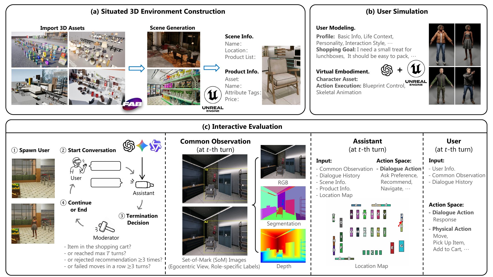
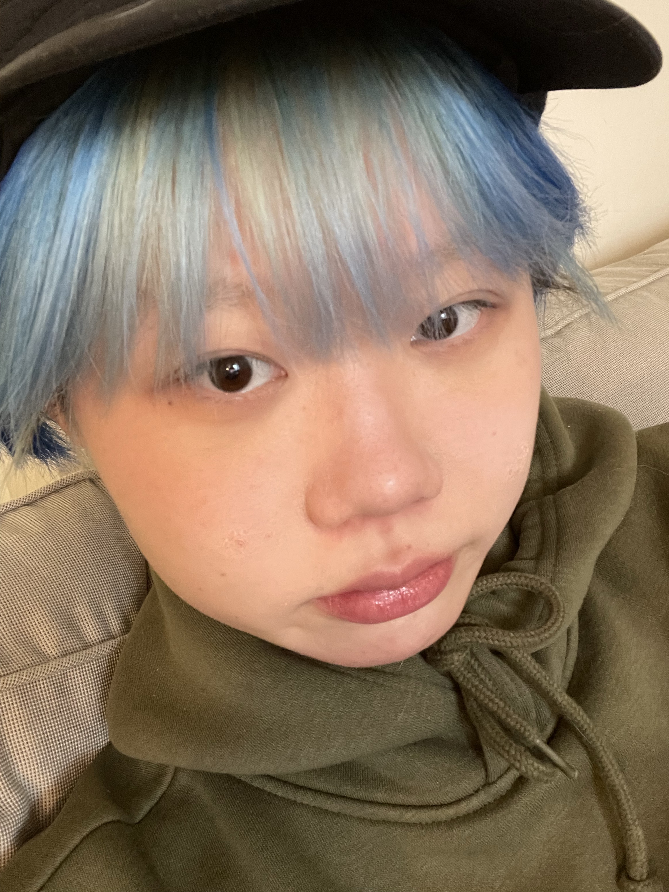

Jingtong Yang (杨靖彤)
The Hong Kong Polytechnic University
jyang9.yang connect.polyu.hk
yjingtong01gmail.com
connect.polyu.hk
yjingtong01gmail.com
connect.polyu.hk
yjingtong01gmail.com
GitHub
Google Scholar

Research
My research interests include vision-language models (VLMs), multimodal agents, and situated assistance.
Publications
Education
The Hong Kong Polytechnic University
PhD, Department of Computing Incoming
2027–
The Hong Kong Polytechnic University
MSc in Information Technology, Department of Computing
2025–2027
University of Alberta
BSc with Specialization in Computing Science
2019–2024